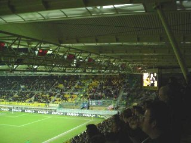
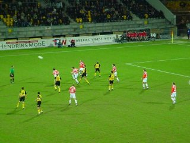
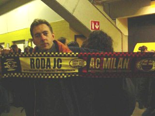
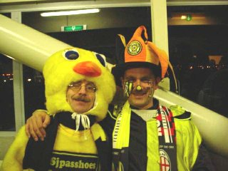
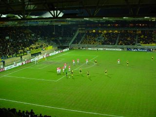

|
Roda JC - FC Utrecht (1-0) 6 februari 2002 |

Op woensdagavond trek je geen volle zalen. Van
Utrecht waren er amper 200 supporters aanwezig.

Roda speelde sinds lange tijd weer eens fris en
geïnspireerd. Utrecht werd overklast en het was
slechts aan doelman Wapenaar te danken dat
Utrecht bij rust nog geen doelpunten tegen had.

Beavis toont een mooie Roda-Milan sjaal.

Tweet en Plet geven een voorproefje van het
naderende carnaval.

Vrije trap voor Roda. Pas in de 72e minuut werd
het 1-0 door een doelpunt van Vandenbroeck.
©KPD